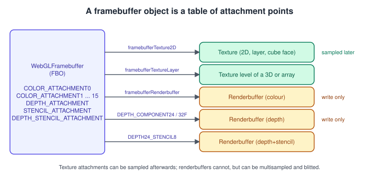
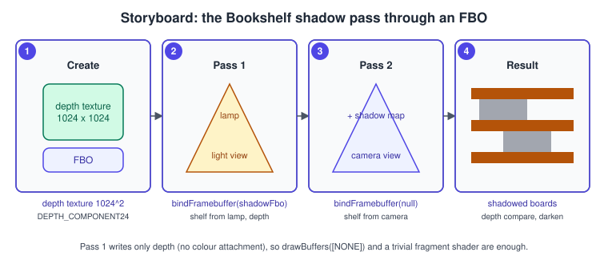
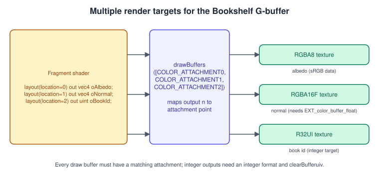
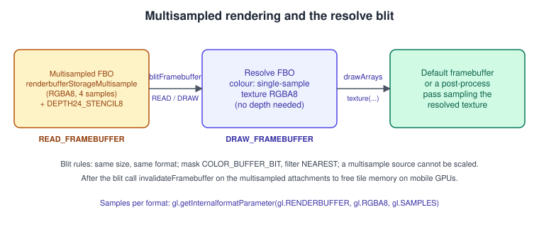

Framebuffers and Render-to-Texture in WebGL 2
|
This content was generated with the assistance of AI and should be verified against the official documentation before being relied on in production. |
Until now every draw call in this sub-section has ended up on the canvas. A framebuffer object (FBO) redirects the output of a draw call to textures and renderbuffers that you own. That one idea is the foundation of shadow maps, mirrors and portals, post-processing such as bloom, deferred shading, GPU colour-ID picking, dynamic environment maps and every "render something small, then use it as a texture" trick. This page covers the whole WebGL 2 framebuffer API: what an FBO is made of, when it is complete, how to render into textures and into several of them at once, how to antialias off-screen rendering, which formats you can render to, how to read results back without stalling the GPU, and the mistakes that produce a black or an empty result.
The facts were checked in November 2026 against the WebGL 2.0 specification (editor’s draft of 30 June 2026), the MDN WebGL API reference and
MDN’s WebGL best practices. The version documented is WebGL 2.0, which is derived from OpenGL ES 3.0 and is supported by Chrome 56, Firefox 51,
Safari 15 and Edge 79 and later (about 97 % of global usage according to caniuse). Everything is plain JavaScript in the browser, with no
library. WebGL 1.0 is named only where its rules differ (one colour attachment, no drawBuffers without an extension, no multisampled
renderbuffers, no blit). This page is the framebuffer step of the raw WebGL running example of the Bookshelf scene: the shadow pass through
an FBO and the colour-ID picking pass. The first triangle is in Your First Triangle in WebGL 2,
the stages an FBO redirects are in The WebGL Rendering Pipeline and the texture objects you attach
are in Textures and Samplers in WebGL. The same API in desktop OpenGL is described in
Framebuffers and Render-to-Texture in OpenGL; the shadow technique itself is in
Shadows and Global Illumination.
What a framebuffer is

The default framebuffer is the canvas drawing buffer. The browser creates it with the context (see the context attributes alpha, depth,
stencil, antialias, premultipliedAlpha and preserveDrawingBuffer in
Your First Triangle in WebGL 2), you cannot resize or attach to it directly, and the
browser composites it into the page after your animation-frame callback returns. It is selected by gl.bindFramebuffer(gl.FRAMEBUFFER, null).
A framebuffer object is a WebGLFramebuffer you create with gl.createFramebuffer(). It stores no pixels itself. It is a table of
attachment points, each of which refers to an image that holds the pixels:
| Attachment point | Content | Notes |
|---|---|---|
|
Colour (or integer) values written by fragment shader outputs |
WebGL 2 guarantees at least 4 ( |
|
Depth values for the depth test |
Renderbuffer |
|
Stencil values |
Renderbuffer |
|
Combined depth and stencil image |
Renderbuffer |
An attachment is either a texture or a renderbuffer:
| Image type | Use it when | Properties |
|---|---|---|
Texture ( |
You will sample the result in a later pass (shadow map, post-processing input, mirror). |
Any texture format that is renderable; can be a level of a mipmap chain, a cube face, a layer of a 3D or 2D array texture. Cannot be multisampled in WebGL 2. |
Renderbuffer ( |
You only need the pixels during the pass (the depth buffer of a colour pass) or you want multisampling. |
Opaque image optimised for writing. It cannot be sampled by a shader. It can be multisampled and it can be a blit source. |
Attaching and detaching is cheap but not free: MDN’s best practices warn that almost any change to an FBO’s attachments invalidates its
completeness, so set up the framebuffers you use every frame once, at load time, and avoid calling checkFramebufferStatus in production
loops because it can force a flush and a round trip to the GPU process.
Render to a texture: a complete example
The smallest useful use is "draw a scene into a texture, then draw that texture on screen". The four steps are always the same:
-
Create the target texture and allocate its storage (here with
texStorage2D, which makes the texture immutable and complete in one call). -
Create a framebuffer and attach the texture to
COLOR_ATTACHMENT0. Add a depth renderbuffer if the pass depth-tests. -
Check completeness once.
-
Every frame: bind the FBO, set the viewport to the target size, clear and draw; then bind the default framebuffer, restore the viewport and draw using the texture.
viewport 256 x 256| B[(Colour texture)] B -->|bindTexture + sampler2D| C[Screen quad] C -->|pass 2: bindFramebuffer null
viewport canvas size| D[Canvas]
The page below runs as is: save it as rtt.html and open it through any local web server (WebGL itself does not need one, but module and
image loading in the later examples do). The spinning coloured triangle is drawn into a 256 by 256 texture and the texture is shown on a quad.
<!doctype html>
<meta charset="utf-8">
<title>Render to texture</title>
<canvas id="c" width="512" height="512"></canvas>
<script>
const gl = document.getElementById('c').getContext('webgl2');
if (!gl) throw new Error('WebGL 2 is not available');
function program(vs, fs) {
const p = gl.createProgram();
for (const [type, src] of [[gl.VERTEX_SHADER, vs], [gl.FRAGMENT_SHADER, fs]]) {
const s = gl.createShader(type);
gl.shaderSource(s, src);
gl.compileShader(s);
if (!gl.getShaderParameter(s, gl.COMPILE_STATUS)) throw new Error(gl.getShaderInfoLog(s));
gl.attachShader(p, s);
}
gl.linkProgram(p);
if (!gl.getProgramParameter(p, gl.LINK_STATUS)) throw new Error(gl.getProgramInfoLog(p));
return p;
}
// Pass 1 program: a coloured triangle rotated by uAngle.
const triProg = program(`#version 300 es
in vec2 aPos; in vec3 aColor; uniform float uAngle; out vec3 vColor;
void main() {
float c = cos(uAngle), s = sin(uAngle);
gl_Position = vec4(mat2(c, s, -s, c) * aPos, 0.0, 1.0);
vColor = aColor;
}`, `#version 300 es
precision mediump float;
in vec3 vColor; out vec4 outColor;
void main() { outColor = vec4(vColor, 1.0); }`);
// Pass 2 program: a textured quad.
const quadProg = program(`#version 300 es
in vec2 aPos; out vec2 vUv;
void main() { vUv = aPos * 0.5 + 0.5; gl_Position = vec4(aPos * 0.8, 0.0, 1.0); }`,
`#version 300 es
precision mediump float;
in vec2 vUv; uniform sampler2D uTex; out vec4 outColor;
void main() { outColor = texture(uTex, vUv); }`);
// Attribute locations are fixed with bindAttribLocation before linking in larger programs;
// here we query them.
const triVao = (() => {
const data = new Float32Array([-0.6,-0.5, 1,0,0, 0.6,-0.5, 0,1,0, 0,0.6, 0,0,1]);
const v = gl.createVertexArray(); gl.bindVertexArray(v);
gl.bindBuffer(gl.ARRAY_BUFFER, gl.createBuffer());
gl.bufferData(gl.ARRAY_BUFFER, data, gl.STATIC_DRAW);
const a = gl.getAttribLocation(triProg, 'aPos'), c = gl.getAttribLocation(triProg, 'aColor');
gl.enableVertexAttribArray(a); gl.vertexAttribPointer(a, 2, gl.FLOAT, false, 20, 0);
gl.enableVertexAttribArray(c); gl.vertexAttribPointer(c, 3, gl.FLOAT, false, 20, 8);
return v;
})();
const quadVao = (() => {
const v = gl.createVertexArray(); gl.bindVertexArray(v);
gl.bindBuffer(gl.ARRAY_BUFFER, gl.createBuffer());
gl.bufferData(gl.ARRAY_BUFFER, new Float32Array([-1,-1, 1,-1, -1,1, 1,1]), gl.STATIC_DRAW);
const a = gl.getAttribLocation(quadProg, 'aPos');
gl.enableVertexAttribArray(a); gl.vertexAttribPointer(a, 2, gl.FLOAT, false, 0, 0);
return v;
})();
// Render target: immutable RGBA8 texture, one mip level, plus a depth renderbuffer.
const SIZE = 256;
const target = gl.createTexture();
gl.bindTexture(gl.TEXTURE_2D, target);
gl.texStorage2D(gl.TEXTURE_2D, 1, gl.RGBA8, SIZE, SIZE);
gl.texParameteri(gl.TEXTURE_2D, gl.TEXTURE_MIN_FILTER, gl.LINEAR); // no mipmaps: LINEAR, not LINEAR_MIPMAP_LINEAR
gl.texParameteri(gl.TEXTURE_2D, gl.TEXTURE_MAG_FILTER, gl.LINEAR);
gl.texParameteri(gl.TEXTURE_2D, gl.TEXTURE_WRAP_S, gl.CLAMP_TO_EDGE);
gl.texParameteri(gl.TEXTURE_2D, gl.TEXTURE_WRAP_T, gl.CLAMP_TO_EDGE);
const depth = gl.createRenderbuffer();
gl.bindRenderbuffer(gl.RENDERBUFFER, depth);
gl.renderbufferStorage(gl.RENDERBUFFER, gl.DEPTH_COMPONENT24, SIZE, SIZE);
const fbo = gl.createFramebuffer();
gl.bindFramebuffer(gl.FRAMEBUFFER, fbo);
gl.framebufferTexture2D(gl.FRAMEBUFFER, gl.COLOR_ATTACHMENT0, gl.TEXTURE_2D, target, 0);
gl.framebufferRenderbuffer(gl.FRAMEBUFFER, gl.DEPTH_ATTACHMENT, gl.RENDERBUFFER, depth);
const status = gl.checkFramebufferStatus(gl.FRAMEBUFFER);
if (status !== gl.FRAMEBUFFER_COMPLETE) throw new Error('Framebuffer incomplete: 0x' + status.toString(16));
gl.bindFramebuffer(gl.FRAMEBUFFER, null);
function frame(ms) {
// Pass 1: into the texture.
gl.bindFramebuffer(gl.FRAMEBUFFER, fbo);
gl.viewport(0, 0, SIZE, SIZE);
gl.clearColor(0.1, 0.1, 0.2, 1);
gl.clear(gl.COLOR_BUFFER_BIT | gl.DEPTH_BUFFER_BIT);
gl.enable(gl.DEPTH_TEST);
gl.useProgram(triProg);
gl.uniform1f(gl.getUniformLocation(triProg, 'uAngle'), ms / 1000);
gl.bindVertexArray(triVao);
gl.drawArrays(gl.TRIANGLES, 0, 3);
// Pass 2: to the canvas, sampling the texture.
gl.bindFramebuffer(gl.FRAMEBUFFER, null);
gl.viewport(0, 0, gl.drawingBufferWidth, gl.drawingBufferHeight);
gl.clearColor(0.9, 0.9, 0.9, 1);
gl.clear(gl.COLOR_BUFFER_BIT | gl.DEPTH_BUFFER_BIT);
gl.disable(gl.DEPTH_TEST);
gl.useProgram(quadProg);
gl.activeTexture(gl.TEXTURE0);
gl.bindTexture(gl.TEXTURE_2D, target);
gl.uniform1i(gl.getUniformLocation(quadProg, 'uTex'), 0);
gl.bindVertexArray(quadVao);
gl.drawArrays(gl.TRIANGLE_STRIP, 0, 4);
requestAnimationFrame(frame);
}
requestAnimationFrame(frame);
</script>The points to remember in that example:
-
Set the viewport per target. The viewport is not part of the framebuffer. After switching to a 256 by 256 target you must call
gl.viewport(0, 0, 256, 256), and after switching back you restore it. Forgetting this draws the scene into a corner of the target. -
Clear both buffers of the target. A new texture and a new renderbuffer have undefined or zero contents.
-
No mipmaps means no mipmap filter. The default
TEXTURE_MIN_FILTERisNEAREST_MIPMAP_LINEAR. A texture with only level 0 and that filter is incomplete and samples as opaque black. SetLINEARorNEAREST, or callgl.generateMipmapafter rendering (for a texture whose format is both colour-renderable and filterable) and allocate the levels withtexStorage2D. -
A texture must never be attached to the framebuffer you are drawing to and bound to a sampler at the same time. That is a feedback loop; the draw call fails with
INVALID_OPERATIONin WebGL 2.
The bindFramebuffer targets
WebGL 2 splits the binding point in two, which is what makes blitFramebuffer possible:
| Target | Meaning |
|---|---|
|
Binds the framebuffer to both |
|
Destination of draw calls, clears and the blit. |
|
Source of |
gl.getParameter(gl.DRAW_FRAMEBUFFER_BINDING) and gl.getParameter(gl.READ_FRAMEBUFFER_BINDING) return the bound objects, which is the right way
for a library function to save and restore the caller’s state.
Completeness
A framebuffer can be used for drawing or reading only when it is complete. gl.checkFramebufferStatus(target) returns one of these values;
if it is not FRAMEBUFFER_COMPLETE, every draw, clear and read fails with INVALID_FRAMEBUFFER_OPERATION and nothing appears.
| Status | Typical cause |
|---|---|
|
Ready to use. |
|
An attachment is not a valid image: a deleted texture, a zero-sized level, a colour attachment whose format is not colour-renderable (for example |
|
No attachment at all. |
|
WebGL 1 requires all attachments to have the same size. WebGL 2 removed this status: attachments may differ and the drawing area is the intersection. |
|
The combination of formats is not supported (for example a combination of depth and stencil images the implementation cannot pair). |
|
Attachments have different sample counts. |
When debugging, check the status right after the last attachment call, print the name of the status, and examine the format of every attachment. The rest of this page lists which formats are renderable.
Which formats can you render to
In WebGL 2 the colour-renderable formats without any extension are the unsigned normalised ones (R8, RG8, RGB8, RGBA8, SRGB8_ALPHA8,
RGB565, RGBA4, RGB5_A1, RGB10_A2) and the integer ones (R8I, R8UI, up to RGBA32UI, with RGB10_A2UI). The floating-point ones are
extension-gated:
| Format | Needs | Notes |
|---|---|---|
|
|
Half and full float targets for HDR, G-buffers and simulations. Without the extension the framebuffer is incomplete. |
|
|
Present on systems that can render 16-bit floats but not 32-bit ones. |
32-bit float blending |
|
Rendering to a 32-bit float target does not imply that blending to it works. Blending 16-bit float targets is always supported (MDN). |
Linear filtering of 32-bit float textures |
|
Without it, |
Use the same detection pattern for all of them (the full catalogue is in WebGL Extensions):
const floatTargets = gl.getExtension('EXT_color_buffer_float');
const halfOnly = !floatTargets && gl.getExtension('EXT_color_buffer_half_float');
const hdrFormat = floatTargets || halfOnly ? gl.RGBA16F : gl.RGBA8; // choose before allocating the textureSource: MDN: WebGL best practices
sRGB targets. SRGB8_ALPHA8 is colour-renderable in WebGL 2. When a fragment shader writes to a framebuffer whose attachment has that format, the hardware
converts the linear value to sRGB on write and converts back during blending; sampling a SRGB8_ALPHA8 texture converts to linear. This gives a correct linear
workflow for off-screen passes (see Color Spaces, HDR and Tone Mapping), but the default framebuffer
does not get this treatment, so the last pass writes sRGB values from the shader itself.
Depth textures and the Bookshelf shadow pass
Step 5 of the raw WebGL track is a shadow pass through an FBO: the shelf is drawn once from the desk lamp’s point of view into a depth-only target, and then drawn from the camera sampling that depth.

WebGL 2 lets you attach a depth texture (DEPTH_COMPONENT16, DEPTH_COMPONENT24 or DEPTH_COMPONENT32F; WebGL 1 needed the WEBGL_depth_texture
extension). Because the pass produces only depth, the FBO has no colour attachment and you tell GL not to write colour with drawBuffers([gl.NONE]).
const SHADOW = 1024;
// 1. Depth texture with hardware comparison enabled (for sampler2DShadow).
const shadowTex = gl.createTexture();
gl.bindTexture(gl.TEXTURE_2D, shadowTex);
gl.texStorage2D(gl.TEXTURE_2D, 1, gl.DEPTH_COMPONENT24, SHADOW, SHADOW);
gl.texParameteri(gl.TEXTURE_2D, gl.TEXTURE_MIN_FILTER, gl.LINEAR); // LINEAR is legal only with compare mode on
gl.texParameteri(gl.TEXTURE_2D, gl.TEXTURE_MAG_FILTER, gl.LINEAR);
gl.texParameteri(gl.TEXTURE_2D, gl.TEXTURE_WRAP_S, gl.CLAMP_TO_EDGE);
gl.texParameteri(gl.TEXTURE_2D, gl.TEXTURE_WRAP_T, gl.CLAMP_TO_EDGE);
gl.texParameteri(gl.TEXTURE_2D, gl.TEXTURE_COMPARE_MODE, gl.COMPARE_REF_TO_TEXTURE);
gl.texParameteri(gl.TEXTURE_2D, gl.TEXTURE_COMPARE_FUNC, gl.LEQUAL);
// 2. Depth-only framebuffer.
const shadowFbo = gl.createFramebuffer();
gl.bindFramebuffer(gl.FRAMEBUFFER, shadowFbo);
gl.framebufferTexture2D(gl.FRAMEBUFFER, gl.DEPTH_ATTACHMENT, gl.TEXTURE_2D, shadowTex, 0);
gl.drawBuffers([gl.NONE]);
gl.readBuffer(gl.NONE);
if (gl.checkFramebufferStatus(gl.FRAMEBUFFER) !== gl.FRAMEBUFFER_COMPLETE) throw new Error('shadow FBO incomplete');
gl.bindFramebuffer(gl.FRAMEBUFFER, null);
function renderShadowPass(drawShelf, lightViewProj) {
gl.bindFramebuffer(gl.FRAMEBUFFER, shadowFbo);
gl.viewport(0, 0, SHADOW, SHADOW);
gl.clear(gl.DEPTH_BUFFER_BIT); // depthMask must be true or this clear does nothing
gl.enable(gl.DEPTH_TEST);
gl.enable(gl.POLYGON_OFFSET_FILL); // cheap slope-scaled bias against shadow acne
gl.polygonOffset(2.0, 4.0);
drawShelf(lightViewProj); // depth-only vertex shader, empty fragment shader
gl.disable(gl.POLYGON_OFFSET_FILL);
gl.bindFramebuffer(gl.FRAMEBUFFER, null);
}In the camera pass the shader transforms the world position by the same light matrix and uses sampler2DShadow, whose texture() call returns the
comparison result (0 or 1, or a bilinear blend of four comparisons, which is free hardware percentage-closer filtering when the texture uses LINEAR):
#version 300 es
precision highp float;
precision highp sampler2DShadow;
uniform sampler2DShadow uShadowMap;
in vec4 vLightClip; // lightViewProj * worldPosition, from the vertex shader
in vec3 vColor;
out vec4 outColor;
void main() {
vec3 p = vLightClip.xyz / vLightClip.w * 0.5 + 0.5; // NDC -> texture coordinates and depth in [0, 1]
float lit = (p.z > 1.0) ? 1.0 : texture(uShadowMap, p); // vec3: xy = uv, z = reference depth
outColor = vec4(vColor * mix(0.35, 1.0, lit), 1.0);
}Source: GLSL ES 3.00 specification
Notes on depth targets:
-
Compare mode decides the filter. A depth texture sampled as a plain
sampler2D(no compare mode) must useNEARESTfiltering;LINEARmakes it incomplete. WithCOMPARE_REF_TO_TEXTUREand asampler2DShadowthe filtering is applied to the comparison results. -
DEPTH_COMPONENT32Fis the highest precision,DEPTH_COMPONENT24the common choice andDEPTH_COMPONENT16the cheapest. A shadow map often needs a bigger bias than the main depth buffer; tunepolygonOffsetor add a bias in the shader. -
Sampler objects (
gl.createSampler()) let you keep the compare mode and filter out of the texture and reuse them for several depth textures. -
The full technique (cascades, bias, percentage-closer filtering) is in Shadows and Global Illumination and the lighting that consumes the result in Lighting in WebGL Shaders. In three.js the same pass is created by
light.castShadow(see Lights and Shadows in three.js).
shadowFbo, depth only] --> M[Main pass
sample shadow map
MSAA FBO] M -->|blitFramebuffer resolve| R[Resolved colour texture] R --> B1[Bloom pass A
horizontal blur] --> B2[Bloom pass B
vertical blur] B2 --> C[Composite to canvas
tone mapping + sRGB] P[Picking pass
ID FBO, only on click] -.-> X[readPixels 1 x 1]
Multiple render targets
A fragment shader in WebGL 2 can write to several outputs in one draw call, each to a different attachment. This is multiple render targets (MRT). It is the basis of deferred shading (albedo, normal and depth in one pass) and is used to write colour and an object id in the same pass.

Two things connect output n of the shader to attachment m of the framebuffer: the layout(location = n) qualifier on the shader output, and
gl.drawBuffers(array), whose element n names the attachment that receives output n.
gl.getExtension('EXT_color_buffer_float'); // needed for the RGBA16F normal target
const W = 1024, H = 768;
function makeTarget(internalFormat) {
const t = gl.createTexture();
gl.bindTexture(gl.TEXTURE_2D, t);
gl.texStorage2D(gl.TEXTURE_2D, 1, internalFormat, W, H);
// Integer textures cannot be filtered at all: NEAREST is mandatory for R32UI.
gl.texParameteri(gl.TEXTURE_2D, gl.TEXTURE_MIN_FILTER, gl.NEAREST);
gl.texParameteri(gl.TEXTURE_2D, gl.TEXTURE_MAG_FILTER, gl.NEAREST);
return t;
}
const albedoTex = makeTarget(gl.RGBA8);
const normalTex = makeTarget(gl.RGBA16F);
const idTex = makeTarget(gl.R32UI);
const gbuffer = gl.createFramebuffer();
gl.bindFramebuffer(gl.FRAMEBUFFER, gbuffer);
gl.framebufferTexture2D(gl.FRAMEBUFFER, gl.COLOR_ATTACHMENT0, gl.TEXTURE_2D, albedoTex, 0);
gl.framebufferTexture2D(gl.FRAMEBUFFER, gl.COLOR_ATTACHMENT1, gl.TEXTURE_2D, normalTex, 0);
gl.framebufferTexture2D(gl.FRAMEBUFFER, gl.COLOR_ATTACHMENT2, gl.TEXTURE_2D, idTex, 0);
const depthRb = gl.createRenderbuffer();
gl.bindRenderbuffer(gl.RENDERBUFFER, depthRb);
gl.renderbufferStorage(gl.RENDERBUFFER, gl.DEPTH_COMPONENT24, W, H);
gl.framebufferRenderbuffer(gl.FRAMEBUFFER, gl.DEPTH_ATTACHMENT, gl.RENDERBUFFER, depthRb);
gl.drawBuffers([gl.COLOR_ATTACHMENT0, gl.COLOR_ATTACHMENT1, gl.COLOR_ATTACHMENT2]);
// Clear each target with the correct typed call.
gl.clearBufferfv(gl.COLOR, 0, [0, 0, 0, 0]);
gl.clearBufferfv(gl.COLOR, 1, [0, 0, 0, 0]);
gl.clearBufferuiv(gl.COLOR, 2, [0, 0, 0, 0]);
gl.clearBufferfi(gl.DEPTH_STENCIL, 0, 1.0, 0); // only valid with a depth-stencil attachment; use clearBufferfv(gl.DEPTH, 0, [1]) hereThe matching fragment shader:
#version 300 es
precision highp float;
precision highp int;
in vec3 vNormal; in vec2 vUv; flat in uint vBookId;
uniform sampler2D uCover;
layout(location = 0) out vec4 oAlbedo;
layout(location = 1) out vec4 oNormal;
layout(location = 2) out uint oBookId;
void main() {
oAlbedo = texture(uCover, vUv);
oNormal = vec4(normalize(vNormal) * 0.5 + 0.5, 0.0);
oBookId = vBookId;
}Source: WebGL 2.0 Specification
The rules that trip people up:
-
gl.clearclears every buffer in the current draw buffer list with the same colour value, which is wrong for integer attachments. UseclearBufferfv,clearBufferiv,clearBufferuivandclearBufferfiper attachment as above; thedrawbufferargument is the index into the draw buffer list, not the attachment number. -
Integer attachments need integer outputs (
uint,uvec4,int) and are never blended. A fragment output type that does not match the attachment type is undefined. -
All attachments of one draw call may use different formats, but the total per-pixel size is limited on some GPUs; the whole thing is a bandwidth multiplier, so keep the G-buffer small.
-
Blending and the write mask are per draw buffer in the spec, but WebGL 2 applies
gl.blendFuncandgl.colorMaskto all of them equally. -
In WebGL 1, MRT needs
WEBGL_draw_buffers, which is the old way; use WebGL 2 and plaindrawBuffersfor new code. -
gl.readBuffer(attachment)selects which attachmentreadPixelsand the blit read from.
Antialiasing off-screen: multisampled renderbuffers
Antialiasing applies to the default framebuffer through the antialias: true context attribute (the default, and the browser may ignore it). Textures cannot be
multisampled in WebGL 2, so an off-screen pass that needs MSAA renders to a multisampled renderbuffer and then resolves it into a normal texture with blitFramebuffer.

const W = 1280, H = 720;
const maxSamples = gl.getParameter(gl.MAX_SAMPLES);
const samples = Math.min(4, maxSamples); // or query getInternalformatParameter for the exact format
// Multisampled FBO: colour and depth are renderbuffers.
const msFbo = gl.createFramebuffer();
gl.bindFramebuffer(gl.FRAMEBUFFER, msFbo);
const msColor = gl.createRenderbuffer();
gl.bindRenderbuffer(gl.RENDERBUFFER, msColor);
gl.renderbufferStorageMultisample(gl.RENDERBUFFER, samples, gl.RGBA8, W, H);
gl.framebufferRenderbuffer(gl.FRAMEBUFFER, gl.COLOR_ATTACHMENT0, gl.RENDERBUFFER, msColor);
const msDepth = gl.createRenderbuffer();
gl.bindRenderbuffer(gl.RENDERBUFFER, msDepth);
gl.renderbufferStorageMultisample(gl.RENDERBUFFER, samples, gl.DEPTH_COMPONENT24, W, H);
gl.framebufferRenderbuffer(gl.FRAMEBUFFER, gl.DEPTH_ATTACHMENT, gl.RENDERBUFFER, msDepth);
// Resolve FBO: a single-sample texture.
const resolveTex = gl.createTexture();
gl.bindTexture(gl.TEXTURE_2D, resolveTex);
gl.texStorage2D(gl.TEXTURE_2D, 1, gl.RGBA8, W, H);
gl.texParameteri(gl.TEXTURE_2D, gl.TEXTURE_MIN_FILTER, gl.LINEAR);
const resolveFbo = gl.createFramebuffer();
gl.bindFramebuffer(gl.FRAMEBUFFER, resolveFbo);
gl.framebufferTexture2D(gl.FRAMEBUFFER, gl.COLOR_ATTACHMENT0, gl.TEXTURE_2D, resolveTex, 0);
function renderFrame(drawScene) {
gl.bindFramebuffer(gl.FRAMEBUFFER, msFbo);
gl.viewport(0, 0, W, H);
gl.clear(gl.COLOR_BUFFER_BIT | gl.DEPTH_BUFFER_BIT);
drawScene();
gl.bindFramebuffer(gl.READ_FRAMEBUFFER, msFbo);
gl.bindFramebuffer(gl.DRAW_FRAMEBUFFER, resolveFbo);
gl.blitFramebuffer(0, 0, W, H, 0, 0, W, H, gl.COLOR_BUFFER_BIT, gl.NEAREST);
// The multisampled contents are no longer needed: tell the driver (matters on tiling mobile GPUs).
gl.bindFramebuffer(gl.READ_FRAMEBUFFER, msFbo);
gl.invalidateFramebuffer(gl.READ_FRAMEBUFFER, [gl.COLOR_ATTACHMENT0, gl.DEPTH_ATTACHMENT]);
}The rules of blitFramebuffer(srcX0, srcY0, srcX1, srcY1, dstX0, dstY0, dstX1, dstY1, mask, filter):
| Rule | Detail |
|---|---|
|
|
|
|
Formats |
When the source is multisampled, the colour formats of source and destination must be identical. This is why the resolve target is |
Scaling |
With a single-sample source you may scale and flip by choosing different rectangles ( |
Reading a multisampled buffer |
|
MSAA has limits in WebGL. getInternalformatParameter(gl.RENDERBUFFER, format, gl.SAMPLES) lists the sample counts a format supports (the list is sorted in descending
order; the first is the maximum). Float formats may or may not be multisampled. The WebGL 2 specification also restricts creating a multisampled depth-stencil renderbuffer in some
cases, which is why code that must work everywhere falls back to a resolve-less path or to FXAA when renderbufferStorageMultisample fails. When the post-process works on the
resolved image, MSAA before tone mapping is wrong for HDR (edges that mix a very bright and a dark sample alias after the tone curve); some engines tone map before resolving or use a custom resolve.
Discarding contents with invalidateFramebuffer
gl.invalidateFramebuffer(target, attachments) and gl.invalidateSubFramebuffer(target, attachments, x, y, width, height) tell the driver that the listed attachments no longer need to be kept.
On tile-based mobile GPUs this avoids writing the tile memory back to main memory (a substantial bandwidth saving) and avoids loading it again at the start of the next pass. MDN’s
best practices recommend it for depth, stencil and multisampled attachments you will not read again. On the default framebuffer the attachment names are gl.COLOR, gl.DEPTH and gl.STENCIL
instead of the *_ATTACHMENT values. After invalidation the contents are undefined: do not read them. It is a hint; calling it where it is not needed costs nothing.
The pairing rule: clear at the start of a pass lets the driver skip loading the previous content, invalidateFramebuffer at the end lets it skip storing. Use both for transient depth buffers.
Reading pixels back
gl.readPixels(x, y, width, height, format, type, dstData) reads from the current read framebuffer (the FBO or the default one). Only a few format/type pairs are guaranteed: RGBA with
UNSIGNED_BYTE for any normalised colour attachment, and the implementation-defined pair reported by getParameter(gl.IMPLEMENTATION_COLOR_READ_FORMAT) and IMPLEMENTATION_COLOR_READ_TYPE.
Integer attachments use RGBA_INTEGER with UNSIGNED_INT or INT. Rows are bottom to top and are padded to PACK_ALIGNMENT (default 4).
Colour-ID picking (Bookshelf step 7)
To pick a book, render the books into an FBO with a flat colour encoding the book index, read the one pixel under the pointer, and decode:
const pickFbo = /* RGBA8 texture + depth renderbuffer, same size as the canvas */ null;
function pickBook(clientX, clientY, canvas, drawBooksWithIdColor) {
const rect = canvas.getBoundingClientRect();
const x = Math.floor((clientX - rect.left) * canvas.width / rect.width);
const y = canvas.height - 1 - Math.floor((clientY - rect.top) * canvas.height / rect.height); // bottom-up
gl.bindFramebuffer(gl.FRAMEBUFFER, pickFbo);
gl.viewport(0, 0, canvas.width, canvas.height);
gl.disable(gl.BLEND); // blending would corrupt the id
gl.clearColor(0, 0, 0, 0);
gl.clear(gl.COLOR_BUFFER_BIT | gl.DEPTH_BUFFER_BIT);
drawBooksWithIdColor(); // fragment shader writes vec4(id & 255, (id >> 8) & 255, 0, 255) / 255
const px = new Uint8Array(4);
gl.readPixels(x, y, 1, 1, gl.RGBA, gl.UNSIGNED_BYTE, px);
gl.bindFramebuffer(gl.FRAMEBUFFER, null);
const id = px[0] | (px[1] << 8);
return px[3] === 0 ? -1 : id - 1; // alpha 0 = background; the shader stored index + 1
}The shader writes the id as index + 1 with alpha 255, so a cleared pixel (alpha 0) means that no book is under the pointer. Keep the id pass free of
antialiasing, dithering (gl.disable(gl.DITHER)), lighting and colour management; any of them changes the bytes you decode. A 1 by 1 read is cheap, but it still waits for the GPU.
Asynchronous readback
readPixels into a typed array forces the GPU to finish and the browser to transfer the data synchronously. MDN’s best practices call this a pipeline stall and recommend the
buffer-and-fence pattern of WebGL 2: read into a PIXEL_PACK_BUFFER, insert a fence, poll it without blocking, and then fetch the bytes.
function readPixelsAsync(gl, x, y, w, h, format, type, dst) {
const buf = gl.createBuffer();
gl.bindBuffer(gl.PIXEL_PACK_BUFFER, buf);
gl.bufferData(gl.PIXEL_PACK_BUFFER, dst.byteLength, gl.STREAM_READ);
gl.readPixels(x, y, w, h, format, type, 0); // GPU to GPU copy, returns immediately
gl.bindBuffer(gl.PIXEL_PACK_BUFFER, null);
const sync = gl.fenceSync(gl.SYNC_GPU_COMMANDS_COMPLETE, 0);
gl.flush(); // make sure the fence is submitted
return new Promise((resolve, reject) => {
function poll() {
const status = gl.clientWaitSync(sync, 0, 0); // timeout 0: never blocks
if (status === gl.WAIT_FAILED) { gl.deleteSync(sync); gl.deleteBuffer(buf); reject(new Error('clientWaitSync failed')); return; }
if (status === gl.TIMEOUT_EXPIRED) { setTimeout(poll, 4); return; }
gl.deleteSync(sync);
gl.bindBuffer(gl.PIXEL_PACK_BUFFER, buf);
gl.getBufferSubData(gl.PIXEL_PACK_BUFFER, 0, dst);
gl.bindBuffer(gl.PIXEL_PACK_BUFFER, null);
gl.deleteBuffer(buf);
resolve(dst);
}
poll();
});
}
// Usage: const px = await readPixelsAsync(gl, x, y, 1, 1, gl.RGBA, gl.UNSIGNED_BYTE, new Uint8Array(4));The result is one or more frames late, which is acceptable for hover highlighting and screenshots but not for something that must be consistent within the same frame. Fences are explained with the other synchronisation objects in WebGL 2 Advanced Features.
Post-processing with ping-pong targets
A chain of full-screen effects reads the previous result as a texture and writes the next one. Because a texture cannot be read and written in the same pass, effects that need several iterations (blur, bloom, simulation) alternate between two FBOs:
const targets = [makeFboWithTexture(w, h), makeFboWithTexture(w, h)]; // { fbo, tex }
let read = 0;
function blurPass(program, direction) {
const src = targets[read], dst = targets[1 - read];
gl.bindFramebuffer(gl.FRAMEBUFFER, dst.fbo);
gl.viewport(0, 0, w, h);
gl.useProgram(program);
gl.activeTexture(gl.TEXTURE0);
gl.bindTexture(gl.TEXTURE_2D, src.tex);
gl.uniform2f(gl.getUniformLocation(program, 'uDirection'), direction[0] / w, direction[1] / h);
gl.drawArrays(gl.TRIANGLES, 0, 3); // one oversized triangle covers the screen: no quad seam
read = 1 - read; // the result becomes the next input
}Source: MDN: drawArrays()
A single oversized triangle generated from gl_VertexID (no vertex buffer needed) is the usual full-screen primitive. Bloom blurs at half or quarter resolution to save fill rate. Post-processing in three.js
uses the same idea with WebGLRenderTarget (see Post-processing in three.js).
Other uses and options
| Feature | How |
|---|---|
Cube map render target |
Attach each face with |
Layered target |
|
Mip level target |
The |
Copying instead of rendering |
|
Canvas as source |
|
Resizing |
Textures and renderbuffers have fixed size. On a canvas resize, reallocate them (delete the old, create new with |
Device pixel ratio |
Size off-screen targets from |
Pitfalls checklist
-
The FBO is incomplete: print
checkFramebufferStatusonce, right after setup, in development. Common causes are float formats withoutEXT_color_buffer_float, a deleted texture and mismatched sample counts. -
Black result: the texture has a mipmap min filter but no mipmaps, or the sampled texture is also the render target (feedback loop,
INVALID_OPERATION). -
Result in a corner: the viewport was not set for the target.
-
Depth test does nothing in the pass: the FBO has no depth attachment. The default framebuffer’s depth buffer is not used while an FBO is bound.
-
Depth not cleared:
gl.depthMask(false)is still set from a transparent pass;clearrespects the write masks. -
Wrong colours: the pass wrote linear values to an
RGBA8target that is later sampled as if it were sRGB (or the reverse). PickSRGB8_ALPHA8or convert in the shader. -
Upside-down result:
UNPACK_FLIP_Y_WEBGLdoes not apply to FBO output; texture coordinates andreadPixelsrows both start at the bottom. -
Slow frames from
readPixelson the main path: use the asynchronous pattern above. -
Leaks: textures, renderbuffers and framebuffers are not garbage collected on the GPU side until deleted or until the context is lost; delete with
deleteFramebuffer,deleteTextureanddeleteRenderbufferwhen a pass is removed. -
Context loss: all of these objects are gone after
webglcontextlost; rebuild them in thewebglcontextrestoredhandler (see Context Loss and Robustness).
Where the books and older guides are outdated
| Topic | Older material | Today |
|---|---|---|
Render targets in three.js (LTJ chapter 11, TCB chapter 6) |
|
The three-argument form of render was removed from three.js long ago; use |
Raw WebGL 1 off-screen rendering (PAR chapters 2 and 3) |
Single colour attachment, depth textures and float targets through |
WebGL 2 makes depth textures, |
Reading back |
Synchronous |
Prefer a pixel-pack buffer with a fence, or three.js |
For the other WebGL 2 additions that arrived at the same time (instancing, transform feedback, array textures, queries and fences) continue with WebGL 2 Advanced Features. The desktop equivalent of the multi-pass flow is in Framebuffers and Render-to-Texture in OpenGL, and the general concept page is Transparency, Blending and Post-Processing.